DEVICE LIBRARIES
Introduction
A device (in Proteus terminology) is a type of real world component such as an NPN transistor or a PIC microprocessor. It follows that a component placed on the drawing is an instance of a device. There are essentially three types of device:
- Single element devices. These are parts for which there is a one to one correspondence between the schematic symbol and the PCB package. Each pin has a single name and a single pin number.
- Homogenous multi-element devices. These are parts for which there are several identical elements in the one PCB package. Typical examples would be a 7400 quad NAND gate or a TL072 dual op-amp. The same pin will have a different pin number for each element, except for the power pins which tend to be common.
- Heterogeneous multi-element devices. These are parts where there are several different elements in the one PCB package, but where you wish to draw each element as separate component on the schematic. The most common example by far is a relay, in which you wish to have the coil and one or more sets of contacts on different parts of the schematic.
Proteus also provides support for bus pins. Devices such as microprocessors and their associated peripherals can thus be drawn in very compact forms since their data and address buses may be represented by single pins. Wiring them up becomes a lot less tedious, too. Devices with one or more bus pins also require a pinout to specify the pin numbers for each physical pin of the bus.
Whereas a single element device will have just one physical pin number associated with each schematic pin, multi-element parts and parts with bus pins all have multiple pin numbers for each device pin. This aspect of the device creation process is handled by the Visual Packaging Tool. In addition, this tool will allow you to create alternate packagings (each with its own set of pin numbers) for the same schematic part. A typical application of this would a microprocessor chip such as the PIC16F877 which is available in both DIL40 and PLCC44.
Important Note
While the following topics are a detailed explanation of how to create component parts in Proteus, in practise this should almost never be necessary. In addition to the many installed libraries Proteus includes free access to over 15 million component parts and footprints via two other means:
1) Integrated web search and import. This works directly from the library picker dialogue on the schematic and requires a valid maintenance contract.
2) The universal part import dialogue. This provides support for almost all third party part vendors (Ultra-Librarian, Samacsys, SnapEDA, etc.). If the part doesn't exist in Proteus itself the next step is to search for and then import it directly from a third party vendor.
Universal Part Import Dialogue
Tutorial movies on both techniques can be found on our Youtube Channel.
Managed Libraries
Proteus also supports working with managed libraries. These are libraries containing approved library parts which can be exported and held under version control. The versioning information can then be used to ascertain whether the latest version of a library part is in use in a project.
With a managed library workflow there are typically three areas of responsibility; the user, the librarian and the reviewer. This could be three different people or just one person operating across all three roles.
- The user simply switches Proteus into managed mode (System Menu->System Settings->Managed Libraries Preferred checkbox) and then continues working. Proteus will disable web import in the pickers, restrict local property changes and default to showing only managed libraries for selection.
- The librarian works in library manager to create managed libraries, move parts into them, handles versioing and releases managed libraries back to the users.
- The reviewer works with a combination of the manage changes dialogue form and the pre-production check to verify that the latest approved version of the library parts is in use on a ny given project.
Full documentation on the managed libraries workflow can be found in the library manager help file (LIBMAN.CHM) or via the help menu in the Library Manager module.
Tutorial movies on managed libraries can be found on our Youtube Channel.
Making a Device Element
Most of the devices you will encounter will involve only a single element. That is to say that by placing one component object, you account for all the pins in the physical part. This is in contrast to a multi-element part like a 7400 for which you need to place four gates to account for all the pins. Either way, the first stage in making a new library part is to place the graphics and pins for the device element or elements.
To make a device element:
- Place graphics objects to define the device body in the appropriate graphics style(s).
- Place device pin objects to represent the pins.
- Annotate the pins to assign name and types using any of the standard editing techniques (see Editing an Object) or the Property Assignment Tool.
- Tag all the objects that comprise the element. Then invoke the Make Device command and assign any default properties.
These stages are worthy of further discussion:
Defining the Device Body
The device body is essentially the complete graphic for the device, excluding its reference designator and pins. Very often, it will just be a box, in which case you should simply select and place a graphics box of the appropriate size in the COMPONENT graphics style as shown below.
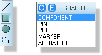
Select the Component Graphics Style
For components with more complex graphics such as transistors, op-amps and so forth you can use any of the graphic objects that Proteus provides in whatever graphics styles are appropriate and perhaps editing the objects and assigning local, fixed values to some or all of the graphics style attributes.
It is important to think carefully about what graphics styles you choose for the graphics in the new component. In general most graphics will be placed with the COMPONENT style selected and the graphic objects will not need editing as they default to fully following this parent COMPONENT style. Occasionally, however, you will want part of the graphics of the new device to be ‘fixed’. For example, you may want the solid body of a transistor to always be filled, perhaps to black. In these cases it is appropriate to edit the graphic object after placement and uncheck some or all of the graphics style attributes and to set local values though where possible you should endeavor to leave as many attributes as possible following the parent, COMPONENT, style. Your other consideration should be how the graphic object placed will fit in to a schematic. For example, if you are designing an OPAMP you may wish to use short lines between the slope of the body and the base of power, compensation or some such pins in which case it is best if these lines are placed in the PIN style so that they look like part of the pin.
If you wish to define the origin for the device, you should also place an Origin marker at the appropriate point. If you don't specify an origin, Proteus will default it to the top leftmost pin end
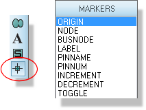
See 2D Graphics for more information about placing and editing graphics objects.
See Editing Local Styles for more information on customizing individual graphic objects
See Editing Global Styles for more information on defining a global or ‘house’ style for a type of object.
Placing the Pins
When making a device, you use the special device pin objects, available with the Device Pin icon selected to place each pin in turn. Several types of device pin are pre-loaded into the Object Selector when you first select the Device Pin icon, and further types can be picked from the symbol libraries as required. You may also define pin types of your own.
As you place each pin object, you need to be sure that it is oriented correctly. The blue cross that appears at one end of each pin object designates the connection point for the pin; the other should generally be in contact with some part of the device body.
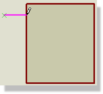
A correctly orientated device pin being placed on a component outline
For further information about pin objects see Pin Objects.
Annotating the Pins
This third phase of the device creation process is probably the trickiest, and can lead to some obscure problems much later on in the design cycle if not carried out correctly. It is therefore extremely important to get right!
Each pin can carry a pin name, pin number and electrical type. The latter is used for electrical rules checking, and also by the ProSPICE simulator. The electrical type of pins must be correctly specified for digital simulator models in particular.
You have two basic approaches available to you in annotating the pins:
- Edit each pin in turn (point at it and use the keyboard shortcut for ‘Edit Object under mouse’ – CTRL+E by default – will probably be easiest), and proceed to edit its properties using the dialogue form.
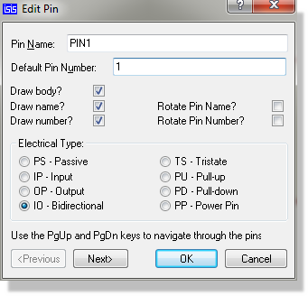
The Edit Pin dialogue form being annotated
- Use the Property Assignment Tool to assign to the PINNAME, PINNUM and TYPE properties of the pins.
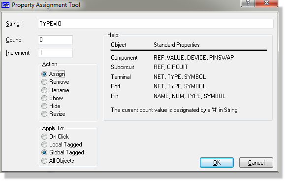
The PAT dialogue form being primed to assign Electrical Type as Bi-directional
In most cases, you will find it appropriate to use a mix of these techniques. In general, it is easier to assign pin numbers using the Visual Packaging Tool, and this is the only way to assign pin numbers for a multi-element part or a part with bus pins. However, for a simple single element device, you can enter pin numbers at this stage, if you wish.
In assigning pin names and numbers, bear in mind the following:
- A pin must always have a name. If you type in a number when there is no name, the pin name will automatically be made the same as the pin number
- To place pins with overbars in their names, , use dollar ('$') characters to mark the start and end of the overbar. For example RD/$WR$ would display with an overbar on the 'WR' letters .
If you give two or more pins the same name, they will be deemed to be electrically interconnected in the netlist and thus on the PCB layout. While extremely useful this can cause serious problems if used improperly.
In assigning pin types, the following table may be helpful:
| Pin Type | Type ID | Example Uses |
|
Passive |
PS |
Passive Device Terminals |
|
Input |
IP |
Analogue or digital device inputs |
|
Output |
OP |
Analogue or digital device outputs |
|
BiDir |
IO |
Microprocessor or RAM data bus pins |
|
Tri-State |
TS |
ROM output pins |
|
Pull Down |
PD |
Open Collector/drain outputs |
|
Pull Up |
PU |
Open emitter/source outputs |
|
Not Connected |
NC |
An NC pin. Note that you should still connect an NC terminal as discussed here. |
|
Power |
PP |
Power/Ground supply pins |
If you are unclear how to actually perform the required editing operations, the following sections of the manual are also relevant:
See Pin Objects for a full discussion of the Edit Pin dialogue form.
See The Property Assignment Tool for examples of how to use the Property Assignment Tool.
The final stage of creating a single element device is to tag all the objects (graphics and pins) which comprise the device, and then invoke the Make Device command.
The Make Device Command
The Make Device command is a multi-stage dialogue form sometimes referred to as a Wizard in other applications. There are four pages:
- Device properties - these are things like the name of the device, the prefix to use for new components and also properties associated with component animation as used by Proteus VSM
- Packaging - this page displays the packagings that have been defined (for an existing component) and provides access to the Visual Packaging Tool.
- Component Properties - this page provides the means to create and edit property definitions and default property values.
- Datasheet & Help - this page allows you to assign a datasheet and/or help file to the component.
- Library selection - the final screen allows you to specify indexing information and choose the library in which the device will be stored.
Detailed context sensitive help is provided for all the fields on these pages. If you are unsure of the purpose of a particular field, click the '?' at the top right of the dialogue form and then click the field itself to see an explanation of its purpose.
Device Properties Page
This page has two major sections:- General Properties and Active Component Properties.
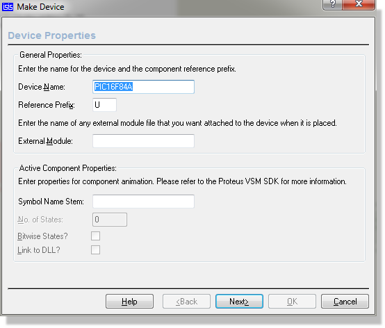
The Device Properties page of the Make Device dialogue form
The General Properties section determines the name of the device, and the reference prefix. This is the letter or letters that appear in front of the part ID for newly placed components. Note that if you make this blank, newly placed components will be un-annotated and that their part value and properties text will also be hidden. This is useful for block diagram type drawings, or for components such as the Virtual Oscilloscope, which are not really part of the design.
The Active Component Properties section is used for creating animated components for use with Proteus VSM. More information on this is provided on a limited basis (and at our discretion) under NDA terms within the Proteus VSM SDK.
Packagings Page
This page displays the set of packagings that have been defined for the device; for a new device the list will be empty.
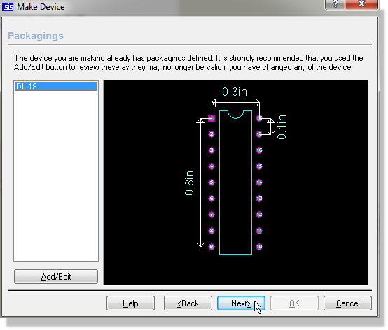
The Packaging tab of the Make Device form
Pressing the Add/Edit button will launch the Visual Packaging Tool . More information on the tool can be found in the following sections.
The Visual Packaging Tool Explained .
Note that a different procedure is required to package a heterogeneous multi-element part. In this case, the packaging tool must be invoked for the complete set of elements as placed on the schematic.
Component Properties & Definitions Page
This page is used to define property definitions and default values for the component's properties. The selector on the left shows the properties that have been defined, whilst the Property Definition and Property Defaults sections determine the type, visibility and default value of the property.
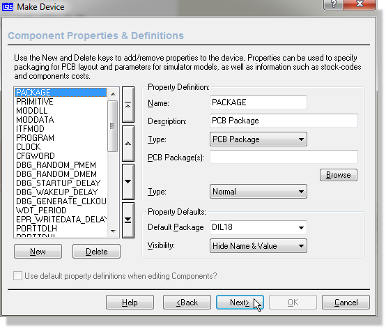
The Properties Definitions page of the Make Device dialogue form
See Property Definitions for more information about component properties and property definitions
Data Sheet and Help Page
This page allows you to associate a data sheet (PDF file) and/or a help topic with the device. If a data sheet is defined, a Data button will appear on the Edit Component dialogue form and if a help topic is defined, a Help button will appear. You will see these buttons for many of the components in the supplied libraries.
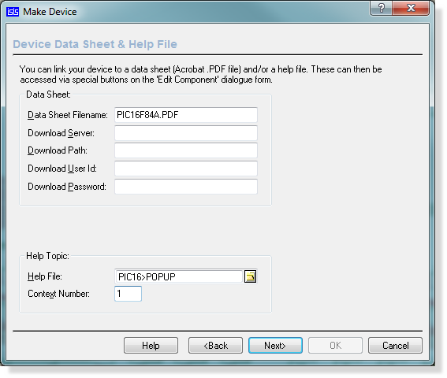
The Data Sheet and Help page of the Make Device Dialogue form
The Data Sheet and Help page of the Make Device Wizard.
Data sheets can be located in one of two places:
- In the Data directory of your Proteus installation. You can change the location that Proteus searches for data sheets by clicking the Path Settings button on the Data Sheet Not Found dialogue form that appears when Proteus cannot find a data sheet.
- On an HTTP or FTP server - either on the Internet or on your company Intranet. You may need to enter a user ID and password for some servers.
The general idea is that there should be a central repository for data sheets, and that Proteus copies them to individual users installations on as-needed basis.
Referencing a help topic is most useful if you are creating complex models for the ProSPICE simulator, and need to create documentation to be associated with the model. This is likely to be of relevance onto to advanced users and model developers.
Library Selection Page
The final page allows you to specify the library indexing data for the new part and also to select into which library the new device will be stored. Only read/write (as opposed to read only) device libraries are displayed.
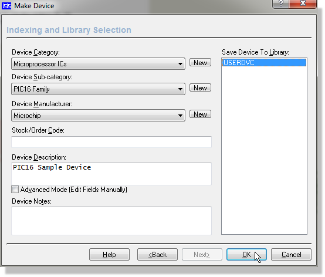
Committing the device to a user assigned library
The Device Category drop-down menu displays a list of existing categories, whilst the sub-category list contains existing sub-categories for the currently selected category. You can add new categories and sub-categories by clicking the adjacent New buttons. Note that a category or sub-category will disappear automatically from the lists when there are no parts in the libraries that match it.
The Device Notes field allows you to enter more extensive notes that relate to the device These notes can be viewed from the Edit Component dialogue form; a good use is to provide helpful information regarding simulator model parameters or limitations.
Once you click the OK button, the device will be stored to the selected library. Also, if it exists within the design you will be prompted as to whether you wish to update all the components that use it with the new definition.
The Visual Packaging Tool
The visual packaging tool provides a graphical environment in which to assign one or more PCB footprints to a schematic part. For each PCB package, a table mapping pin numbers to pin names is created such that different packagings can have different pin numbers for the same schematic pin.
The packaging tool also facilitates the entry of different pin numbers for each element in a multi-element part, and each bit of a bus pin.
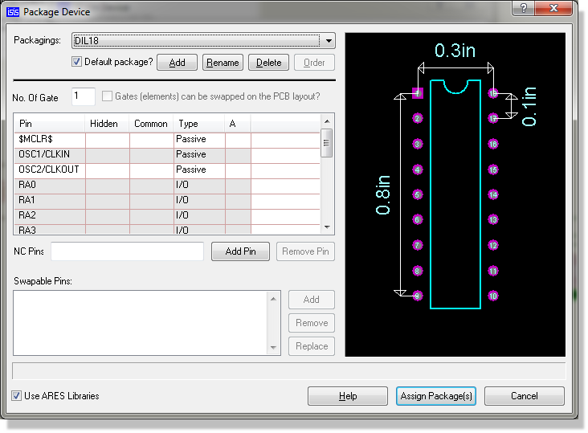
The Visual Packaging Tool
The packaging tool can be invoked in one of two ways:
- By clicking the Add/Edit button of the Packaging Page in the Make Device dialogue form.
- By placing the element or elements of the device to be packaged on the schematic, tagged them and selecting the Packaging Tool command from the Library menu or the packaging tool icon.
The second method is the only way to package heterogeneous multi-element parts.
As with the Make Device command, detailed context sensitive help is available on all the fields. To see the help on a particular field, click the '?' at the top right of the form, and then click the field itself.
Packaging Selector
The Packages section of the packaging tool shows a list-selector for the packagings that have been defined so far and buttons for adding, renaming, deleting and ordering them. One package may be selected as the default, and this is the one that will be used for newly placed components.
The Add button will launch a copy of the package library browser enabling you to choose a footprint for the new packaging.
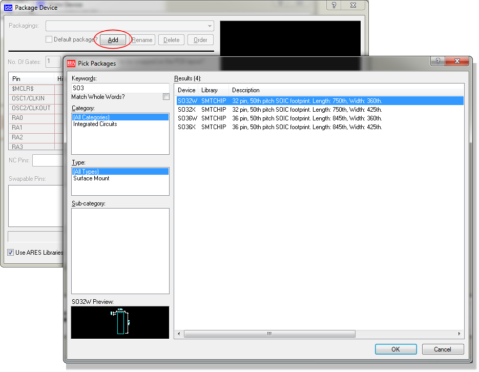
Browsing and adding a package to the device
Pin Grid
The main business of the packaging tool is carried out using the pin grid. Here you can enter pin numbers for each pin in each element, and also select which pins are common between the elements of a multi-element device.
You can assign pin numbers either directly by typing in the number or by clicking on the associated pad in the package viewer.
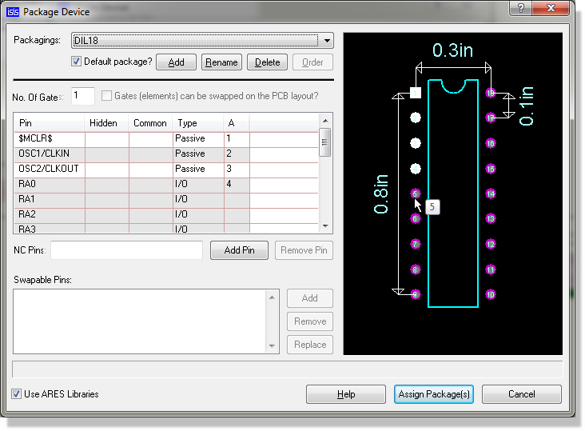
Clicking on a Pad in the package viewer will hilight the pad and assign the pin number
The electrical type is displayed for information only, and cannot be changed here - you must define it when placing the individual pins around the device element.
Automatic Pin Mapping
For large BGA's you can automatically apply Altera Quantas or Xilinx Pinout files via the 'Load Pin Information Script' command on the context menu of the pin grid.
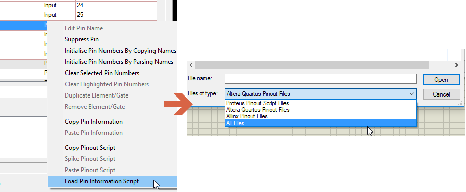
For other large pin count devices it may be worth using the Proteus pin information script format which is basically a comma separated list of pin names and pin numbers. For example,
*PINSCRIPT
PKGNAME=DIL08
PIN1,1,
PIN2,2,
PIN3,3,
PIN4,4,
PIN5,5,
PIN6,6,
PIN7,7,
PIN8,8,
*ENDSCRIPT
Please be aware that the script is case sensitive.
See Also:
Number of Elements
This field determines the number of pin-number columns that appear in the pin grid. For a multi-element heterogeneous part, it should represent the total number of elements.
Package Viewer
The package viewer displays the PCB footprint chosen for the current packaging. As each pin is assigned to the pin grid, it is highlighted such that you can see which pins remain unassigned. Also, if you point at a pin with the mouse, Proteus will display the associated name (if assigned) and the pin number.
If the text cursor is in the pin grid, then clicking on a pin in the package view will enter its number into the pin grid and the pin will highlight to show that it is now assigned.
Hidden Pins
Hidden pins are generally used to specify power supply connections to components in such a way that they do not clutter up the schematic. A hidden pin can be defined in one of three ways:
- By clearing the Draw Body checkbox in the Edit Pin dialogue form. This must be done when making the device element. Such a pin will appear in the Pin Grid when the packaging tool is first invoked, and will be present in all packagings.
- By clicking the Add Hidden Pin button. This creates a hidden pin that is specific to a given packaging, and is implicitly common to all its elements.
- By selecting 'Hide Power Pins' in the BSDL Import dialogue. This will hide power pins with the same name and add them to the packaging tool as hidden pins.
Hidden pins connect by pin name to the net with the same name. For example, hidden pins named VCC will connect to the VCC net.
Common Pins
A common pin is one which has the same pin number on all the elements of a multi-element device. Typically this will apply to power pins and enable/strobe pins that are common to all buffers within a multi-element driver.
If a common pin is not hidden, then any wiring to it on one element will be connected wiring on the other elements.
A common pin is also deemed to be associated with all the elements in a heterogeneous multi-element part, even if it is not present on some of them. This has implications for the gate swap rules within ARES.
Gate Swap
Selecting this checkbox will flag to ARES that the gate elements can be swapped.
Swapable Pins
The swappable pins section allows you to define groups of pins that are electrically interchangeable. For example, the two inputs A and B of a 7400 quad NAND gate are electrically identical can could be swapped on the PCB for convenience of wiring.
You can add a swap-group to the list by highlighting the pins in the pin grid (hold the ctrl key down and click left on the pin names), and then clicking the Add button.
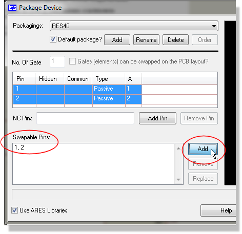
Assigning pins as swapable pins in the Visual Packaging tool
NC (Not Connected) Pins
When packaging a large device, it may be useful to 'prove' that all the pins have been accounted for by verifying that all the pins are highlighted in the Package View. Since some pins may be specified as non-connected, it is useful to be able to record that they have been accounted for. This can be achieved by entering their numbers in the NC Pins field. Use commas to separate the pin numbers.
For added redundancy you can add physical pins to the NC pin list. For example, if you are not using certain pins of an IC in your project you can add the pad that they would connect to the NC pins list. The system will not permit routing to an NC pin in ARES.
Alternatively, If you wish NC pins to be explicitly visible or wired to something on the schematic then you can do so with an NC terminal. This on-schematic method of specifying NC pins is increasingly popular but large devices as, from a QA perspective, design intent is visible on the schematic.
See Also:
Connecting NC Pins to Terminal
Making a Single Element Device
It will almost always be faster to simply import the part directly.
Most of the devices you make will have a one-one correspondence between the schematic symbol and the PCB package. In these cases, the procedure is pretty much the same as that for creating a device element.
To make a single element device
- Place graphics objects to define the device body in the appropriate graphics style(s).
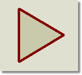
- Place device pin objects to represent the pins.
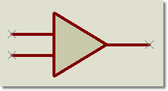
- Annotate the pins to assign name and types using any of the standard editing techniques for Pin Objects or the Property Assignment Tool.

- Tag all the objects that comprise the device. Then invoke the Make Device command.
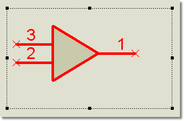
- Enter a name and reference prefix for the device in the Device Properties page, then click Next to move to the Packaging page.
- Assuming that the device has a PCB footprint, click the Add/Edit button and use the Visual Packaging Tool to assign a package and pin numbering. When you are done, click Assign Packages to return to the Packaging page.
- Click Next to move to the Component Properties page and enter any property definitions and default values for other component properties.
- Click Next to move to the Data Sheet page and specify the location of any data sheet or help topic that you wish to associate with the device.
- Click Next to move to the Library Selection page and choose the library in which you wish to store the device.
- Finally, click OK to complete the process.
If you prefer, you can also assign pin numbers for single element devices at step [3]. In this case, the pin numbers will appear automatically within the Visual Packaging Tool.
Making a Multi-Element Homogenous Device
A multi-element homogenous device is one like a 7400 in which the physical part consists of several identical elements which you wish to place as separate components on the schematic. To handle such a device, Proteus must allow for different sets of pin numbers to be applied to the same element. For a 7400, there are 4 sets of pin numbers - one for each gate - and which set is used for a given gate is determined by the component reference suffix. For example, if you label a 7400 gate as U1:C then Proteus will use the third set of pin numbers: 8, 9 & 10.
The question then arises as to where to store these sets pin numbers, and how best to allow for their entry and editing. This is all handled by the Visual Packaging Tool.
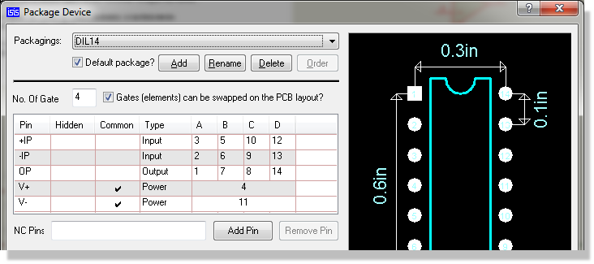
An example of a multi-element homogeneous device in the Visual Packaging Tool
To make a multi-element homogeneous device
- Make the device body and place its pins as discussed see Making a Device Element.
- Annotate the pins to assign name and types using any of the standard editing techniques for Pin Objects or the Property Assignment Tool.
- Draw a tagbox (left depress and drag the mouse to encompass all the elements) to tag all elements that comprise the device. Then invoke the Make Device command.
- Enter a name and reference prefix for the device in the Device Properties page, then click Next to move to the Packaging page.
- Click the Add/Edit button on the Packaging page to launch the Visual Packaging Tool.
- Specify the number of elements in the device and then fill out the pin number fields for each element in turn. Check the common column to indicate pins (such as power pins) that have the same number on all elements.
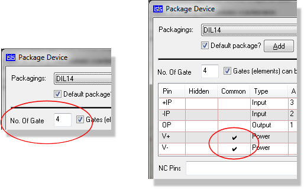
- Proceed as for a single element device from step 7.
Making a Multi-Element Heterogeneous Device
A multi-element heterogeneous device is defined as a part which consists of several different elements, each of which will be placed as a separate component on the drawing. The most common example is probably a relay where you have a coil and one of more sets of contacts. The requirement is to place the coil at one point in the drawing, and the set(s) of contacts elsewhere.
It is important to understand that you need only create an element for each distinct part of the heterogeneous device. In the case of a relay with one coil and two contacts this means that you need to create two elements; one to represent the coil and the other to represent the contacts. You should not create three elements because the two contacts are instances of the same element. See the example below.
As with a multi-element homogenous device, the Visual Packaging Tool is used to deal with the assignment of pin numbers to each element.
Example : Making a multi-element heterogeneous device (Relay with coil and two contacts)
- Place graphics objects and device pins to define appearance of the elements. Make sure the elements are sufficiently separated in the Editing Window so that you can tag the objects that comprise each one by themselves. The process for creating a device element is described in detail here.
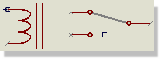
- Annotate the pins to assign pin names and types only
- Tag all the objects that comprise the first element. Then invoke the Make Device command from the Library menu. Enter the Device Name with in the form
NAME:A
where NAME is whatever you want to call the part as a whole. The suffix :A tells Proteus that this is the first element of a heterogeneous device.
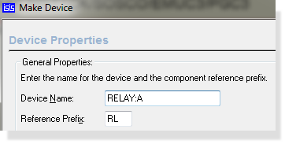
- Walk through the wizard in the normal way, noting that we do not attempt to package the part at this point (skip past this page) and storing the element in a library..
- Repeat the procedure from step [3] for the other element, naming it as NAME:B
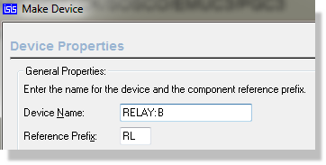
- You should now have two parts in the library. Select the Component icon and place one instance of element A (the coil) and two instances of element B (the contact) in a free area of the schematic.
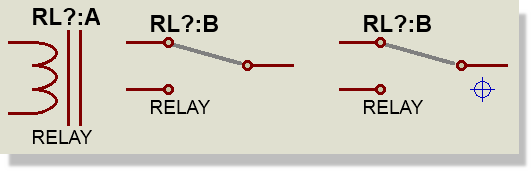
- Edit the RL?:A and RL?:B (second element only) to be RL1:A and RL1:B
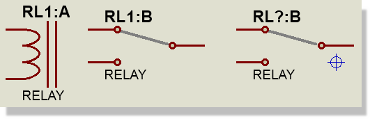
- Edit the second element B and re-annotate to be element C.
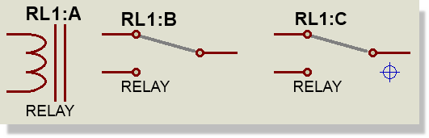
- Drag a tag box around the placed elements, and then invoke the Packaging Tool from the Library menu. You should see that there are pin number columns for each element, but that pins which are unavailable for a particular element have '---' in the number column.
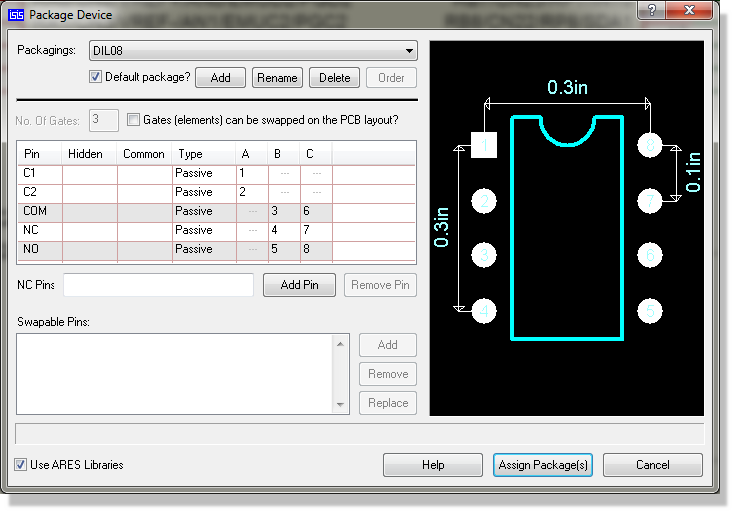
- Create a packaging and enter the pin numbering in the usual way (as picture above).
- Click the Assign Packages button to store the packagings into the library parts. Note that the library part that you created for each element of the device will be updated.
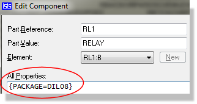
Placing Heterogenous parts is different from placing homogeneous parts. Where Homogeneous parts will automatically change to the next U1:X the Heterogenous devices must be placed as there are saved in the libraries. So for example, if you require Element :C then you will need to pick the RELAY:C from the object selector. You will also need to edit the '?' in the reference to be the required number.
Making a Device with Bus Pins
The device library system has the capability to support devices in which a single pin on the drawn component represents several pins on the physical part. Such a pin is called a bus pin and is intended to facilitate the efficient representation of microprocessors and their support chips. As with multi-element devices, the process of entering pin numbers for each bit of the bus is achieved with the Visual Packaging Tool.
To make a device with bus pins
- Make the device body and place its pins in the same way as for a single element device. You must use the Bus pin, or a user defined pin with a Busnode marker, for the bus pins.
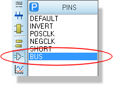
- Tag all the objects that comprise the device, invoke the Make Device command.
- Enter a name and reference prefix for the device in the Device Properties page, then click Next to move to the Packaging page.
- Assuming that the device has a PCB footprint, click the Add/Edit button and use the Visual Packaging Tool to assign a package and pin numbering. You will see that each bit of the bus is given its own row in the Pin Grid. Beyond this, the process for assigning pin numbers is exactly the same as for an ordinary part. When you are done, click Assign Packages to return to the Packaging page
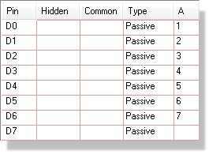
- Proceed as from step 7 for making a single element device.
Property Definitions and Default Properties
There are a variety of applications in which it is useful to arrange for library parts to carry default user properties which are automatically assigned to each component as it is placed. Some common examples include:
- PACKAGE properties for PCB design. Most of the library parts in the supplied libraries carry these properties pre-defined for through hole packaging.
- PRIMITIVE, MODEL and MODFILE properties for VSM simulation. Again, all our library parts for which there is simulator support carry these default properties.
- Stock and/or supplier order codes. If you add default properties for these to your libraries, then they can be included in the Bill of Materials report.
To add default properties to a device whilst making it:
- Follow the steps in Making a Device Element for making the device.
- When you get to the Make Device dialogue form, use the Component Properties page to assign property definitions and default values for the properties..
- Store the device to a library in the ordinary way.
To add to or edit the default properties of an existing device:
- Pick, place and tag an instance of the device. There is no need to decompose it.
- Invoke the Make Device command and click Next to move to the Component Properties page. Any existing property definitions will be displayed.
- Edit the properties as required.
- Click Next twice more and then store the device back to a library by clicking OK.
Default properties may also be assigned to library parts en masse through the Bill of Materials Property Editor or by applying an ADI script.
Dealing with Power Pins
The handling of power pins tends to be a somewhat confusing subject with different schematic capture packages doing different things. Further difficulty arises from the need to accurately define what happens with the power rails whilst not cluttering up the drawing with what is essentially trivial information.
Proteus provides you with a variety of approaches to handling power pins:
- Make the power pins visible and physically wire them to the appropriate points in the circuit. This has the advantage that you can see exactly what is connected where, but tends to be very inconvenient where there are lots of ICs on a schematic.
- Hide the power pins and let Proteus default their connections to like named nets. A hidden VCC pin will thus connect to the VCC net, and a hidden GND pin to the GND net.
- Hide the power pins and specify explicitly which nets they connect to using like named user properties. For example, the user property
VCC = +5V
applied to an object with a hidden VCC pin will cause that pin to be connected to the +5V net.
You can, of course, use a mix of these techniques as appropriate to different parts of a drawing. In general, we have found the use of hidden power pins to be almost essential for digital designs whereas in analogue work, it is often simplest just to wire up the power pins to the appropriate supply rails. This state of affairs is reflected in the construction of the supplied library parts.
To create a hidden pin on a simple, single element device:
- Place a pin object for the pin in the usual way.
- Bring up the Edit Pin dialogue from by clicking right then left on the pin.
- De-select the Draw body checkbox. This hides the pin body, name and number irrespective of the settings of the Draw name and Draw number checkboxes.
- If the pin is to be a power pins, set the pin type to Power.
The existence of the pin object will then be marked only by a dark blue cross at its node end, and the pin will not be drawn at all on any device in which it is included. At netlist time, it will be automatically connected to a net with the same name as its pin name, unless explicitly overridden with an appropriately named user property.
To create a hidden power pin within a packaging :
- Create the device element(s) in the usual way, but do not place pin objects for the hidden pins.
- When creating the packaging(s) inside the visual packaging tool use the Add Pin button to create an extra row within the Pin Grid for the hidden pin.
- Type in a name for the hidden pin e.g. VCC, and then assign the pin a number
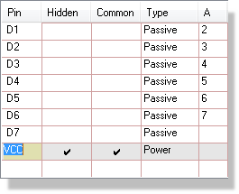
The Virtual Pin is called named as VCC
As with the other type of hidden pin, at netlist time Proteus will connect all hidden pins specified in the packaging to nets with the same name as the given pin names, unless you override this action with an appropriately named user property.
To override a hidden pin's net:
- Tag all the elements of the component for which the hidden pin exists. This is most easily achieved using the Search and Tag command with its Begins With option.
- Use the Property Assignment Tool to assign a user property of the form.
PINNAME=NET
where PINNAME is the name of the hidden pin, and NET is the name of the net you want it connected to.
Editing an Existing Device
Any device element, whether a self contained, single element device, or a constituent of a multi-element may be broken into its constituent pins and graphics using the Decompose command.
To edit device graphics or pins:
- Select component mode and place an instance of the device as a component on the schematic.
- Tag the object by pointing at it and clicking left.
- Select the Decompose command. This will break the device into 2D graphics, pins and possibly an Origin marker. You will also get a text script which contains the device name, prefix, packaging and any default component properties.
- Add, delete or edit the 2D graphics, pins and markers as required.
- Reconstitute the device using the Make Device command as previously described. If you tag the text script generated by the Decompose command as well as the graphics before making the device then you can avoid having to re-enter the device properties.
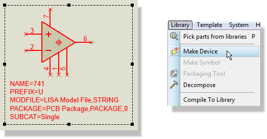
Invoking the Make Device form
If the library part is in use in the current drawing, you will get a prompt requesting whether to perform a Design Global Update. If you select this, then all components on the design that use the device will be updated with the new one using the same mechanism as described for the Pick command. Note that the properties of already placed components will not be modified as Proteus doesn’t know which properties have been manually edited.
Note that the properties of already placed components will not be modified in such circumstances as Proteus doesn’t know which properties have been manually edited.
To edit device properties
- Pick, place and tag an instance of the device. There is no need to decompose it.
- Invoke the Make Device command and click Next to move to the Component Properties page. Any existing property definitions will be displayed.
- Edit the properties as required.
- Click Next twice more and then store the device back to a library by clicking OK.
As with device elements, you will be prompted as to whether you want to update components in the current design.
To edit device packagings:
Pick, place and tag an instance of the device. There is no need to decompose it.
Invoke the Packaging Tool command.
Modify the packagings as required.
Click Assign Package(s) to store the changes back into the device library.
As with device elements, you will be prompted as to whether you want to update components in the current design.
Two other points are worth making:
- Remember that all schematics (Proteus project pdsprj files) carry with them their own copies of the library parts that they use. Consequently, changing a part in a library will not directly change any designs that make use of it. To effect such a change, you must load the project into Proteus and use the Pick command from the Library menu to effect a replace operation.
- When Proteus is installed, our own libraries are set to be read-only. This is to deter you from changing them - an action which would backfire on you when we issue updates. It follows that if you which to change any of the supplied library parts, you should store them to USERDVC.LIB, or some other library of your own.
Indexing Libraries with ASCII Data Import (ADI)
If you have upgraded to Proteus from a very old version prior to V6.5, you will likely have existing user device libraries that do not contain indexing data (Category, Sub-Category, Manufacturer and Description). This section explains how you can index such libraries without needing to re-make each part individually.
The easiest and most convenient way to add categories, subcategories, manufacturers and descriptions to existing device libraries is using ASCII Data Import (ADI). ADI allows you to apply textual properties to a schematic or library by listing the information in an ADI file and then load it in to a design or library. The format of the ADI file lets you apply data to parts selectively by allowing you to specify one or more ‘match’ criteria.
Example ADI File
For the purposes of indexing device libraries created with an earlier version of Proteus, an ADI file of the following format is suitable:
; ADI File For My Component Library.
; Last updated 1st January 2004.
BLOCK=INDEX
; Start by removing all data from the part:
IF TRUE
CAT,REMOVE
SUBCAT,REMOVE
MFR,REMOVE
DESC,REMOVE
END
DATA DEVICE : CAT-, SUBCAT-, MFR-, DESC-
74LS00 : "TTL", "Low Power Schottky", "TEXAS", "Quad NAND Gate"
74HC00 : "TTL", "High Speed CMOS", "TEXAS", "Quad NAND Gate"
74F00 : "TTL", "Fast TTL", "Fairchild", "Quad NAND Gate"
7400 : "TTL", "Standard TTL", [SKIP], "Quad NAND Gate"
END
When the ADI file is loaded, it is applied to each part (in the design if brought in to a design, or to the selected items in the source library, if brought in to the Library Manager).
All lines beginning with a semi-colon character are comments and are ignored by the ADI system. All comments must be on separate lines – you cannot have comments with in a ADI statement or at its end.
For the purposes of indexing a design or a library, all ADI files must have the statement
BLOCK=INDEX
at the start to tell the ADI system that the properties being assigned are those used for indexing.
The property names used by Proteus for indexing a part are CAT for the category, SUBCAT for the subcategory, MFR for the manufacturer and DESC for the description.
We then use an ADI IF TRUE…END block with a TRUE test condition so that the statement always executes when applied to any part. The lines within the block (indented for clarity) remove all current assignments to the category (CAT), subcategory (SUBCAT), manufacturer (MFR) and description (DESC) of the part and ensures we start with a clean, un-indexed part.
To assign index data to the part we use an ADI DATA…END block. In this example, the DATA statement has been set to test just the DEVICE property of the part (its name in the library) and, if matched, to assign CAT, SUBCAT, MFR and DESC properties (the minus signs after the names cause the properties to be ‘hidden’ with the script if the part should be decomposed).
The lines within the DATA…END block specify the match criteria and values to be assigned. In our example, we are matching just the DEVICE name but if you want, you can modify the DATA statement to specify additional properties to be matched if you want a more selective test. To the right of the colon are the values to be assigned to the properties specified in the DATA statement, in the order they are specified – i.e. the first item is assigned to CAT, the next to SUBCAT, and so on.
Occasionally, you will find that you want to ‘skip’ assigning a property because either it isn’t pertinent or you don’t have the information. In these cases, use the special statement [SKIP] (the word SKIP inside square braces) to skip assignment. We’ve shown an example in the last line. Here, a 7401 device, would be assigned a category ‘TTL’, a subcategory ‘Standard TTL’ and a description ‘Quad NAND Gate’. The manufacturer would not be specified and, as we force its removal in the IF…END block means this part will not have a manufacturer specified for it.
ADI File for Library where all Parts have same Category
If you are writing an ADI file for applying to a library and all the parts in it require, say, the same category, you can use a simpler ADI file:
; ADI File For My Component Library.
; Last updated 1st January 2004.
BLOCK=INDEX
; Start by removing all data from the part:
IF TRUE
CAT="TTL",HIDE
SUBCAT,REMOVE
MFR="TEXAS",HIDE
DESC="A TTL Part",HIDE
END
DATA DEVICE : SUBCAT-, DESC-
74LS00 : "Low Power Schottky", "Quad NAND Gate"
74HC00 : "High Speed CMOS", "Quad NAND Gate"
74F00 : "Fast TTL", "Quad NAND Gate"
7400 : "Standard TTL", "Quad NAND Gate"
END
In this ADI file, we used the IF…END block to specify the category, manufacturer and a (default) description. As before, with the test condition TRUE the IF statement is always applied to every part so all parts start with their category, manufacturer and description specified. A DATA…END block is then used to assign the subcategory and a proper description. Thus, for example, a library containing, say, a 74HCT00 (which isn’t in the DATA…END block), will still get a category, manufacturer and default description assigned to it by way of the IF…END block.
Using Wild Cards
Finally, note that you can use asterisk and question-mark wild-cards within the matching of a DATA…END block but you need to think carefully about how it works. The following example endeavours to use an asterisk wild-card to match all TTL families:
DATA DEVICE : DESC-
74*121 : "A TTL 74xx121 part"
74*21 : "A TTL 74xx21 part"
END
In this, somewhat contrived, example we’ve deliberately placed the 74xx21 match after the 74xx121 match. As the statements are tested and applied in order the first statement will (correctly) match a 74LS121 but so will (incorrectly) the second statement! This means that the 74LS121 will have the description "A TTL 74xx21" part. For these reasons, it may be preferable to use either one or more question marks or to avoid wild-cards altogether!
To apply the ADI file to a library, use the Library Manager tool. Select the library you want to from the list of Source libraries and then use the Select All button to select all the parts in the library. Finally, use the ADI Library button to browse for and select the ADI file to be applied. After the ADI is complete, you can select any single library part and then use the Information button to see its indexed values.
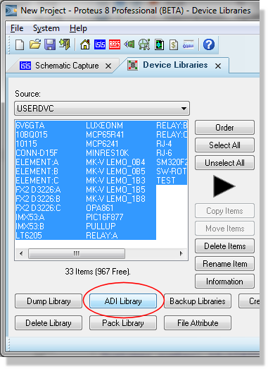
ADI Library from within the Library Manager.